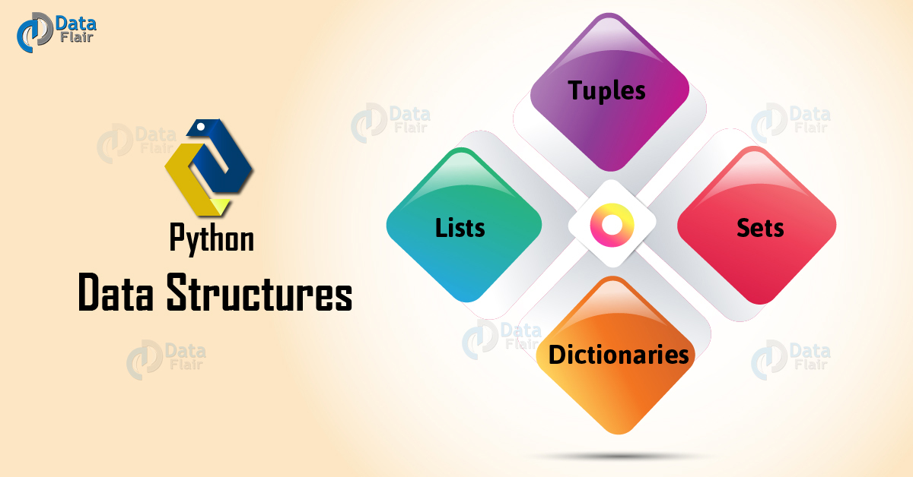

当你不知道用什么数据类型的时候，一定要记得list，大多数的脏活累活ta都帮你搞定
列表list
定义
list是一种有序的集合,内部可以由任何数据类型的组成的
现在有5位员工的汇总信息，
| id | 姓名 | 年龄 | 性别 | 爱好 |
|---|---|---|---|---|
| 1 | David | 25 | Male | Basketball, Pingpang, Hiking |
| 2 | Mary | 23 | Female | Reading, Movies |
| 3 | Henry | 23 | Male | Diving, Hiking |
| 4 | Swift | 21 | Male | Football, Music |
| 5 | Lenard | 26 | Male | Stay at Home |
现在我们需要用一种格式去组织5位员工的信息，以列表为例
names = ['David', 'Mary', 'Henry', 'Swift', 'Lenard']
ages = [25, 23, 23, 21, 26]
hobbies = [['Basketball', 'Pingpang', 'Hiking'],
['Reading', 'Movies'],
['Diving', 'Hiking'],
['Football', 'Music'],
['Stay at Home']]
print(type(names))
print(type(ages))
print(type(hobbies))
print(names)
print(ages)
print(hobbies)
<class 'list'>
<class 'list'>
<class 'list'>
['David', 'Mary', 'Henry', 'Swift', 'Lenard']
[25, 23, 23, 21, 26]
[['Basketball', 'Pingpang', 'Hiking'], ['Reading', 'Movies'], ['Diving', 'Hiking'], ['Football', 'Music'], ['Stay at Home']]
多想一下： 组织数据的方式有很多种，list也可以用不同的方式去组织，大家可以自己想一想。
拼接
a1 = ['Michael', 'Bob']
a2 = ['David', 'Lee']
print(a1 + a2)
print(a2 + a1)
['Michael', 'Bob', 'David', 'Lee']
['David', 'Lee', 'Michael', 'Bob']
拆包
注意： 等号两边长度相同
name, age = ['David', 25]
print(name)
print(age)
David
25
切片
列表的切片与字符串类似
| id | 姓名 | 年龄 | 性别 | 爱好 | 正索引 | 倒索引 |
|---|---|---|---|---|---|---|
| 1 | David | 25 | Male | Basketball, Pingpang, Hiking | 0 | -5 |
| 2 | Mary | 23 | Female | Reading, Movies | 1 | -4 |
| 3 | Henry | 23 | Male | Diving, Hiking | 2 | -3 |
| 4 | Swift | 21 | Male | Football, Music | 3 | -2 |
| 5 | Lenard | 26 | Male | Stay at Home | 4 | -1 |
names = ['David', 'Mary', 'Henry', 'Swift', 'Lenard']
names
['David', 'Mary', 'Henry', 'Swift', 'Lenard']
print(names[2])
print(names[-3])
Henry
Henry
print(names[0:3])
print(names[-5:-2])
['David', 'Mary', 'Henry']
['David', 'Mary', 'Henry']
print(names[2:])
print(names[-3:])
['Henry', 'Swift', 'Lenard']
['Henry', 'Swift', 'Lenard']
print(names[:2])
print(names[:-3])
['David', 'Mary']
['David', 'Mary']
列表常用方法
| 常用方法 | 功能 |
|---|---|
| list.append(a) | 向list中添加元素a |
| list.extend(lst) | 向list中添加列表lst |
| list.count(a) | 统计list中a的个数 |
names = ['David', 'Mary', 'Henry', 'Swift', 'Lenard']
print(names)
names.append('Mary')
print(names)
['David', 'Mary', 'Henry', 'Swift', 'Lenard']
['David', 'Mary', 'Henry', 'Swift', 'Lenard', 'Mary']
names = ['David', 'Mary', 'Henry', 'Swift', 'Lenard']
print(names)
names.extend(['Mary'])
print(names)
['David', 'Mary', 'Henry', 'Swift', 'Lenard']
['David', 'Mary', 'Henry', 'Swift', 'Lenard', 'Mary']
ages = [25, 23, 23, 21, 26]
print(ages.count(23))
2
one = ['David']
print(one[-1])
print(one[0])
David
David
元组tuple
形似列表，也有
- 元组拼接
- 切片
- 拆包
name_list = ['David', 'Mary', 'Henry', 'Swift', 'Lenard']
name_tuple = ('David', 'Mary', 'Henry', 'Swift', 'Lenard')
print(type(name_list))
print(type(name_tuple))
print(name_list)
print(name_tuple)
<class 'list'>
<class 'tuple'>
['David', 'Mary', 'Henry', 'Swift', 'Lenard']
('David', 'Mary', 'Henry', 'Swift', 'Lenard')
print(name_list==name_tuple)
False
集合
names2 = ['David', 'Mary', 'David', 'Swift', 'David']
print(set(names2))
{'Swift', 'Mary', 'David'}
集合的方法
- setdata.add(ele) 向setdata中加入ele
name_set = set(names2)
print(name_set)
name_set.add('William')
print(name_set)
{'Swift', 'Mary', 'David'}
{'William', 'Swift', 'Mary', 'David'}
name_set[2]
---------------------------------------------------------------------------
TypeError Traceback (most recent call last)
<ipython-input-20-98cb669cc173> in <module>
----> 1 name_set[2]
TypeError: 'set' object is not subscriptable
注意： 集合不能切片